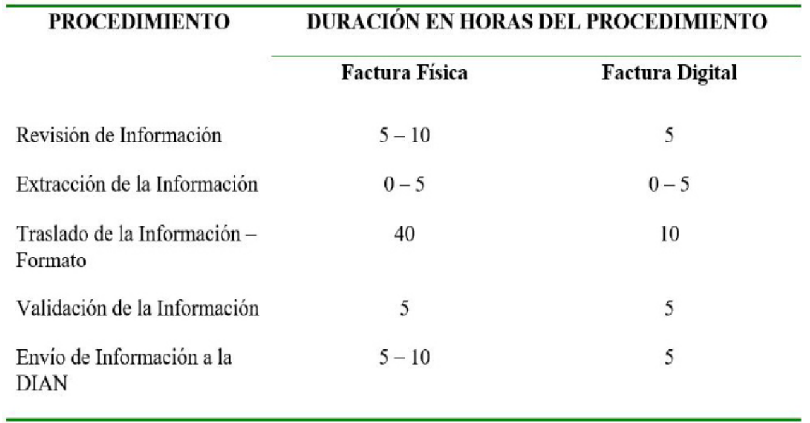

Introducción
En la actualidad la implementación de la
facturación electrónica es de suma importancia,
debido a que los gobiernos han desarrollado
una imposición sobre esta medida, puesto
que facilita el control de evasión fiscal y la
gestión tributaria. Sin embargo en varios
países de Latinoamérica, incluido Colombia,
estas responsabilidades de evasión han
ido aumentando, permitiendo visibilizar la
importancia del uso de esta medida, la factura
digital (Roncallo, 2019).
Es por esto que como lo menciona (Eladio
& Ballesteros, 2012), a través de la historia la
aplicación de la tecnología ha permitido que
diferentes tipos de empresas generen ventajas
competitivas a través del uso del comercio
electrónico, generando un incremento en
las expectativas de los clientes y en cómo se
realiza el tratamiento de la información y la
comunicación. Por otro lado, de acuerdo con
(Arévalo & Ortega, 2019) la evolución de la
economía ha permitido que los avances en
la tecnología busquen optimizar los recursos,
generar eficiencia en cada proceso, y una mayor
eficacia en quienes intervienen, desarrollando
una relación comercial impersonal al
momento de usar las plataformas digitales,
en transacciones como la compra y vienes
de productos o servicios, asentando que la
factura electrónica sea el principal soporte en
el proceso.
Todas aquellas empresas que entren al
proceso de la facturación electrónica deberán
realizar modificaciones sensibles en sus
servicios técnicos, debido a que todos los
procesos cambiarían de acuerdo a las nuevas
metodologías. Para esto, en primer lugar se
deben identificar los diferentes pro y contra
de la implementación de la facturación
electrónica, con el objetivo de determinar un
proceso adecuado y personalizado de acuerdo
a cada empresa y por último desarrollar una
serie de capacitaciones, donde los empleados de la empresa cuenten con toda la información
necesaria y de mayor calidad (Beltrán, 2018).
Es por esto que como es mencionado por
(Gomez & Sanchez, 2018) dentro de la economía
mundial, se da como prioridad la necesidad
de estandarizar los diferentes procesos y/o
mecanismos que generen herramientas para
un mejor acceso a la información y para llegar
a esto, se debe tener en cuenta la aplicabilidad
y el mejor entendimiento de la normativa
colombiana referente al tema. De allí la
necesidad de generar una serie de ventajas
significativas, relacionándolas con la realidad
del país, sobre la forma eficiente y sencilla de
la implementación de la factura electrónica
en la ciudad. Para esto se tendrá en cuenta
diferentes sectores empresariales, los cuales
han formado y forman parte del patrimonio
cultural y económico de la región.
Sin embargo la población colombiana,
específicamente en la ciudad de Cúcuta ha
permitido visualizar una gran resistencia a
la hora de cambiar la factura convencional a
la facturación electrónica, ya que la cultura
tributaria evidenciada en cada uno de los
contribuyente es deficiente, lo que permite
evidenciar que existen antecedentes de
corrupción, haciendo que las personas que
en su labor comercial asocian esta modalidad
electrónica, como una forma en que el
estado ejerce vigilancia y control sin medida,
donde el único objetivo de este es captar
una mayor cantidad de recursos a través del
pago del IVA de forma legal y a su vez sean
desviados, desconociendo las ventajas que
trae el implementar este nuevo sistema en
las actividades económicas de la región (Díaz,
Coba, & Bombón, 2016).
De acuerdo con lo anteriormente mencionado,
el presente artículo tiene como propósito
identificar las ventajas y la importancia que
representa la implementación de la facturación
electrónica en las empresas de Cúcuta, así
como establecer cada uno de los beneficios tanto económicos, tributarios y operativos que podrían obtener
las empresas de a la hora de
establecer el sistema de facturación electrónica como lo manifiestan Rivera et al (2019).
Figura 1. Metodología para la elaboración del artículo.
Fuente: Autores
En la figura número 1 se aprecia las etapas
que se llevaron a cabo para el desarrollo del
artículo. En una primera fase, se procedió a una
búsqueda exhaustiva bibliográfica. Los artículos
relacionados con la facturación electrónica, sus
ventajas y beneficios, los cuales fueron temas
primordiales para la revisión. Se seleccionaron
diferentes artículos de cualquier parte del
mundo para una revisión completa, usando
bases de datos y repositorios universitarios.
También, para la recopilación de los artículos se
tuvieron en cuenta las palabras clave elegidas,
las cuales son: Facturación electrónica, ventajas
y desventajas, implementación, comercio
electrónico y economía digital.
Después de esta primera fase se recurrió a la
selección de los documentos usando como
rango de fechas el año 2010 al 2020, donde
se utilizaron los criterios de búsqueda con
palabras clave mencionadas anteriormente.
En una segunda fase, también se utilizó
como criterio de selección aquellas revistas
indexadas y repositorios universitarios, que
permitieran encontrar con mayor facilidad el
tema a tratar de este artículo. Por consiguiente,
algunas de éstas revistas y universidades fueron: Ciencia UNEMI, Económicas Cuc,
Institución Universitaria ESUMER, Universidad
Libre de Colombia, Universidad de Guayaquil,
Universidad San Ignacio de Loyola, entre otras.
Como fase final, se llevó a cabo la escritura
y composición del presente trabajo con
la información correspondiente al tema
escogido. Para ello, los artículos y trabajos
de investigación que fueron seleccionados
se organizaron en una matriz de extracción,
la cual permitió identificar las ventajas que
representa la implementación de la facturación
electrónica en las empresas de Cúcuta.
Resultados y análisis
Comportamiento de las Empresas en
Cúcuta sobre la Facturación Electrónica
De acuerdo con lo estudios realizados, deja
en evidencia a los empresarios de la ciudad
de Cúcuta, debido que a pesar de reconocer
las facilidades que pueden contraer al
implementar la factura electrónica, estos optan
por no realizarla puesto que el suministro de
la factura digital y a su vez la declaración de la misma a través de los diferentes impuestos, genera un
cierto fraude y evasión fiscal, acciones
que muestran la realidad por la que pasan las diferentes entidades en cuanto a la gestión de
administración y control fiscal (Morantes & Carvajal, 2018).
Por otro lado, otras de las dificultades que se presentan para la implementación de la facturación
electrónica en la ciudad de Cúcuta, es el hecho del desconocimiento de la misma o la falta de
capacitación y acompañamiento a los empresarios de la región para que se asegure ese proceso
y mejorar sus procesos operacionales y contables. Como se puede ver en la Figura 2, a pesar de
la evidencia del conocimiento sobre la factura electrónica en más del 50% de la población, se
presenta un porcentaje considerable de empresarios que no cuentan con el total conocimiento
en cuanto a este proceso, ya que como se puede observar un 38% no tiene claridad sobre las
estrategias para la implementación de la factura electrónica, sus etapas y su marco legal; un 63%
no cuenta con el conocimiento sobre los modelos de emisión y recepción del documento digital;
y por último 25% no tiene conocimiento sobre la firma digital, punto importante al momento de
presentar un documento de factura electrónica (González, Becerra, & Monroy, 2019).
Figura 2. Representación porcentual del conocimiento sobre la facturación electrónica de los
empresarios de la ciudad de Cúcuta
Fuente: (González et al., 2019)
Por otra parte a pesar del conocimiento que han adquirido los empresarios de Cúcuta sobre la
factura electrónica, se evidencia en la Figura 3 que solo el 50% de ellos han implementado la
factura digital en sus empresas, un 25% no ha iniciado el proceso y un último 25% que está en
proceso de implementación. Esto al igual que la información presentada en la Figura 2, evidencia
la falta de acompañamiento por parte de las entidades encargadas, para que todas las empresas
logren iniciar el cambio de la factura física a la digital. Otra de las limitantes que se evidencia, es
la falta de recursos financieros los cuales son requeridos para la estructura tecnológica y digital
en todo este proceso. Por último, en Cúcuta aún no se evidencia una cultura hacia la innovación,
la tecnología y la gestión del cambio, elementos que son importantes en la gestión de calidad
empresarial y una mejor competitividad en la actualidad (González et al., 2019).
Figura 3. Implementación de la facturación electrónica
Fuente: (González et al., 2019)
De acuerdo a lo anteriormente mencionado, a continuación se presentan las diferentes
importancias y ventajas que trae consigo la implementación de la facturación electrónica
para las empresas de la ciudad de Cúcuta, al igual beneficios tanto económicos, tributarios y
operativos que conlleva el llevar a cabo este proceso de digitalización en las facturas.
Importancia de la Facturación Electrónica en las Empresas
En el transcurrir del tiempo, diferentes países ha desarrollado su proceso de implementación de
la facturación electrónica a paso lento, y Colombia no se aleja de esa realidad, específicamente
en la ciudad de Cúcuta donde como se pudo evidenciar anteriormente, no se da prioridad por
la capacitación y apoyo a los empresarios, lo que hace que la cultura tecnológica y el avance
se vea pausado.
Sin embargo para el país existe el reto en que los empresarios, ya sean pequeños, medianos o
grandes, logren adaptarse e implementar este nuevo sistema el cual traerá consigo diferentes
beneficios. Sin embargo la Dirección de Impuestos y Aduanas Nacionales – DIAN, debe ser la
más interesada en que este proceso sea llevado a cabo con total cabalidad, puesto que para
este ente nacional el hecho que se presente este tipo de facturación, permite que las empresas
entreguen en tiempo real todo tipo de información en las diferentes transacciones realizadas,
logrando un impacto significativo en el control fiscal a la empresa emisora. (Pinzon, 2019).
Tabla 1. Impacto operativo a la hora de implementar la factura electrónica por medio de un
proveedor tecnológico o de forma directa.

Fuente: (Pinzon, 2019)
Por otro lado, el implementar este sistema
permitirá que los empresarios puedan optimizar
diferentes procesos administrativos, contables
y gerenciales, teniendo en cuenta si se opta
por los diferentes proveedores tecnológicos y
si se hace de manera directa (Scatolon, 2014).
En la Tabla 1, se logra observar el impacto en
los diferentes procesos operativos en caso de
emitir la facturación electrónica por medio de
un proveedor o si de hace de forma directa.
Allí se evidencia que el hecho de generar el
documento digital de forma directa presenta
un impacto más alto, que si se realizar por
medio de un tercer, ya que estos cuentan con la
infraestructura, la capacitación y la tecnología
necesaria para llevar a cabo este proceso.
Sin embargo, el hecho de realizar este proceso ya
sea de forma directa o por medio del proveedor,
se obtendrán diferentes beneficios, los cuales
podrían ir desde el tiempo de generación y
preparación de facturas, la disminución en los
errores de tipo administrativo, minimización en
gastos de tipo operativos, y una considerable
reducción y/o disminución en los gastos de las
emisiones y recepciones de estos documentos
digitales; significando a simple vista una
mejora en la gestión de calidad empresarial y
una mejora en la competitividad en relación
a aquellas empresas que no han realizado
la implementación de la factura electrónica
(Beltrán, 2018).
Ventajas de la Implementación de la
Facturación Electrónica en Empresas de
Cúcuta
De acuerdo con el Departamento de
Impuestos y Aduanas Nacionales – DIAN,
la factura electrónica es un mecanismo que
permite el soporte en las transacciones en
cuanto a la venta de bienes y/o servicios, la
cual es manipulada totalmente de manera
digital, limitando el uso del papel tradicional,
pero con los mismos propósitos impositivos y
legales vigentes (Quintero & Duran, 2019). Es por esto que como se evidencia en la Tabla 2,
son más los beneficios o las ventajas que tiene
el uso de la factura digital, contra la tradicional
factura física o de papel.
Tabla 2. Ventaja en la implementación de la Factura Electrónica en comparación con la Factura
Tradicional.
Fuente: (DIAN, n.d.).
Además de los beneficios presentados en la
Tabla 2, el hecho de manejar y/o implementar
la factura digital trae consigo mejoras en los
procesos internos de las empresas. Según
estudios realizados, esta implementación
podría hacer que las organizaciones reduzcan
hasta un 80% en los costos, a comparación
del proceso tradicional. Por otro lado también
trae beneficios en los actores involucrados
en todos los procesos, como lo son clienteproveedor, ya que en primer lugar estarían
viendo una considerable disminución en
el consumo de papel, disminuyendo los
impactos ambientales detrás de ese proceso,
así como la minimización en el uso de
diferentes equipos digitales o tecnológicos como impresoras y tintes. Por último, también
se reducen gastos en personal y transporte de
entrega de los diferentes documentos físicos
relacionados con la facturación (León, 2018).
Una de las ventajas o beneficio más significativo
que representa el uso de la factura digital, es el
hecho de la seguridad, puesto que en este tipo
de proceso se representa el uso de la firma
digital, así como los certificados electrónicos,
lo cual permite crear una cultura totalmente
diferente y de seguridad tecnológica en la
empresa, puesto que si se sigue con el uso
de la factura de papel, al momento de tener
que ser transportada al destinatario, podrían
ocurrir ciertas situaciones las cuales podrían convertirse en inconvenientes para el emisor
o receptor, e incluso poder perder la vente o
el cliente (Pérez, 2019).
La facturación electrónica en la actualidad
permite que las diferentes empresas
u organizaciones generen un tipo de
soporte digital, en diferentes formatos
de tipo electrónico, lo que facilita los
métodos relacionados con la producción,
almacenamiento, tratamiento y trasmisión de
la información, llegando al ámbito tributario
nacional, permitiendo que se dé una mayor
eficiencia en la gestión de la información entre
los facturadores (vendedores), compradores
y el Departamento de Impuestos y Aduanas
Nacionales – DIAN (Arévalo & Ortega, 2019).
Finalmente la factura de tipo digital, permite a
las diferentes empresas la posibilidad de estar
dentro del rango de las tendencias a nivel
empresarial y a nivel global, lo que genera una
mejora en la calidad y a su vez en la oportunidad
de participar en mercados internacionales,
esto último con ceros limitaciones en cuanto
al manejo de la información y la transparencia
que caracteriza cada una de las transacciones
comerciales (Alfaro, 2018).
Ventajas Tributarias a la hora de
Implementar la Facturación Electrónica
Tributariamente la factura digital o electrónica
tiene diferentes beneficios los cuales permiten
que la empresa pueda realizar procedimientos
de manera inmediata a comparación del uso
de la factura física. En primer lugar, como
fue mencionado anteriormente, la factura
electrónica debe ser manejada o empleada
de forma directa por personal de la misma
organización, o por un tercero el cual tenga
las competencias necesarias sobre el tema,
lo que permita que los procesos tengan total
garantía en cuanto a seguridad, autenticidad
e integridad en cuanto a la facturación digital,
las distintas notas créditos desde el momento
en que fue expedida y el tiempo que dure su
preservación. Todo esto siempre y cuando la persona que adquiera los servicios o productos
ofrecidos por la empresa, acepte recibir este
modelo de factura (Eladio & Ballesteros, 2012).
Una vez obtenido el aval por parte de la persona
adquiriente, para la operación contable de la
empresa se le es más ágil todo el proceso de
facturación y del tratamiento de la información,
ya que como se puede observar en la Tabla 3,
los procesos realizados a través de la factura
física son más demorados que los realizados
de manera digital, específicamente el traslado
de la información en formato, puesto que esta
actividad requiere de personal extra y tiempo
extra para transferir toda la información
suministrada en las facturas y en algunas
ocasiones llegar a errores humanos por
caligrafía a la hora de redactar los elementos
que trae la factura física.
Tabla 3. Comparación en la duración de los procesos en Factura Física y Factura Digital.

Fuente: (Eladio & Ballesteros, 2012)
Como adición a lo anteriormente comentado
como beneficio tributario, la facturación
electrónica permite visualizar otro tipo de
ventajas en el ámbito tributario de acuerdo a
la implementación de este tipo de documento
como son los siguientes (Arévalo & Ortega,
2019):
- Cuenta con igual validez como la factura
física o de papel.
- Genera la oportunidad de realizar la
facturación a tanto a clientes ocasionales,
como constantes con igualdad de condiciones.
- Permite que la fiscalización de todos
los procesos sea llevada a cabo de forma
inmediata, sencilla y con un costo reducido.
- Desarrolla la ocasión que los compromisos y
obligaciones fiscales sean manejadas de forma
simplificada.
- Permite que los procesos de auditoria tanto
interna, como externa tengan los accesos de
manera rápida y eficaz.
Ventajas Económicas a la hora de
Implementar la Facturación Electrónica
De acuerdo a cada uno de los procesos que se
llevan a cabo dentro de las empresas, todos
conllevan un esfuerzo económico y más en
este caso cuando se implementa la facturación
electrónica, puesto que este procedimiento
requiere de personal calificado y material
tecnológico con el cual se pueda desarrollar
la infraestructura digital que conllevará a la
forma digital de facturar (Doliet, 2016).
Existen una serie de costos que ya se
encuentran asociados a la implementación
de la facturación electrónica, como lo son el
diseño, el desarrollo y la capacitación. En primer
lugar, el diseño es de suma importancia puesto
que es el punto de partida en todo proceso
de facturación electrónica, debido que a partir
de este proceso se planea el sistema que se
empleará en la facturación. Posteriormente el
desarrollo permite estructurar el software y las
interfaces que tendrá el aplicativo, de forma
que se pueda tomar el mayor provecho al
sistema. Por último, la capacitación tiene como
objetivo formar al personal que se encargará de manejar el sistema, asumiendo todo tipo de responsabilidad
para desarrollar la actividad de la
facturación (Montaño, 2019).
Sin embargo, a pesar de los gastos que se mencionan anteriormente, el proceso de facturación
electrónica a corto, mediano y largo plazo permite reducir de manera considerable todos los
procesos operativos referentes a la contabilidad. Como se puede observar en la Figura 4, todo el
proceso digital tanto en el emisor, como el receptor, permite que se reduzca de manera económica
y en tiempo diferentes procedimientos en cuanto a la facturación, mejorando la calidad en la
atención al cliente y la competencia con las demás empresas (Eladio & Ballesteros, 2012).
Figura 4. Porcentaje de costos en el uso de factura física y electrónica.
Fuente: (Eladio & Ballesteros, 2012)
Ventajas Operativas a la hora de
Implementar la Facturación Electrónica
Cuando la empresa desea desarrollar
la facturación electrónica dentro de su
actualización empresaria, como se mencionó
anteriormente, permite que esta pueda lograr
ingresar a nuevos mercados, tanto nacionales
como internacionales, puesto que mejorar sus
servicios, ampliando su gestión de calidad y
permitiéndose ser más competitivo frente a las
demás empresas, Mora et al., (2019). Es por esto
que el hecho de presentar la factura de manera
digital, permite visibilizar diferentes beneficios
de tipo operativo, los cuales generan ahorros
en tiempo del procedimiento comercial
(compra y venta) y costos; a continuación se
mencionan los beneficios más representativos
(Medina V & Rodríguez P, 2018).
- Disminución en la falsificación de
documentos
- Genera mayor confianza y rapidez en los
procesos de información
- Corrección inmediata en caso de presentarse
errores en la facturación
- Recepción y envío inmediato de las facturas
- Mayor eficiencia en el recurso humano
disponible
- Permite mejorar la imagen empresarial y/o
corporativa ante los clientes
- Tramites rápidos en los flujos financieros
- Ausencia de pedidos y errores formales
Cabe resaltar que a pesar de observar los
múltiples beneficios que se obtienen al
implementar la facturación electrónica, en
la actualidad existe aún el rechazo hacia
este tipo de actividades, puesto que no existe ese acompañamiento por parte de los
entes encargados. Es por esto que se deben
establecer estrategias, las cuales identifiquen
de manera acertada aquellas empresas que
están en voluntad de hacer el cambio digital
y realizar el asesoramiento para que tanto
los empresarios, como la DIAN puedan llevar
todos los procesos de manera organizada y
actualizada (Díaz et al., 2016).
Conclusiones
En Colombia, específicamente en la ciudad de
Cúcuta, las diferentes empresas no cuentan
con el suficiente conocimiento en cuando al
tema de la facturación electrónica y a su vez
los beneficios que trae consigo su uso, lo que
generaría un mejor servicio a los clientes y por
otro lado la agilización en diferentes procesos
tanto de tipo operativos, administrativos y
contables. Por otro lado, este sistema si se
empleara de la forma correcta, brindaría que
la información contenida en este tipo de
documento sea totalmente verás, oportuna
y confiable, debido a que el sistema permite
que todo se de en tiempo real y monitoreado
por la Dirección de Impuestos y Aduanas
Nacionales – DIAN.
Sin embargo, tanto la DIAN como las empresas
interesadas, deben buscar la manera en que se
consiga esa alianza estrategia, la cual permita
que los empresarios puedan optar por esta
medida, obteniendo todas las herramientas
necesarias y la capacitación por parte del
personal calificado, mejorando los estándares
de calidad de las organizaciones y a su vez
brindar la mejor atención a los clientes.
Cabe resaltar que cada una de las empresas, o
sus representantes legales deben dar un gran
esfuerzo, ya que incursionar en este tipo de
tecnologías conlleva a una inversión tanto en
capital, como en marketing, ya que de esta
forma se debe dar a conocimiento público
cada uno de los servicios o bienes que ofrecen las empresas, los cuales son totalmente
respaldados por la factura electrónica, y
detrás de ella los requisitos que son validados
de manera fiscal y tributaria.
A pesar de todos los problemas que se
evidencian, se puede observar que los
beneficios son más y que la implementación de
la factura digital podría mejorar la economía,
los procesos operativos y los procesos
tributarios de las empresas en la ciudad de
Cúcuta que quieran iniciar este camino de la
digitalización. Por otro lado, se podrá ofrecer
una mejor calidad en su servicio y en sus
productos, ya que al usar este mecanismo
se genera una mayor confianza en el cliente,
puesto que pueden estar totalmente seguros
que toda la información allí contenida cuenta
con total confidencialidad y un adecuado
tratamiento.
Referencias
- Alfaro, J. D. P. (2018). Implantación De Sistema De
Facturación Electrónica En La Empresa World
Duty Free Group Perú S.A.C. Universidad
San Ignacio de Loyola. Retrieved from http://repositorio.usil.edu.pe/handle/USIL/3933
- Arévalo, A., & Ortega, M. E. (2019). Beneficios de
la implementación de la facturación electrónica
en las pequeñas, medianas empresas y
personas naturales. Universidad Cooperativa
de Colombia. https://doi.org/.1037//0033-2909.I26.1.78
- Beltrán, A. F. (2018). Implementación facturación
electrónica en Colombia. Universidad Católica
de Colombia. Universidad Católica de
Colombia. https://doi.org/10.18041/2382-3240/saber.2010v5n1.2536
- Carrascal, B. L. V., Patiño, J. F. H., Villamizar,
D. A. H., Velasquez, L. N. S., Velásquez,
J. E. S., & Yuncosa, J. A. V. (2020). (DIE)-
MODELO PARA EL DISEÑO DE IDEAS DE EMPRENDIMIENTO. FAGROPEC-Facultad
de Ciencias Agropecuarias, 12(1), 52-64.
Obtenido de: https://www.uniamazonia.edu.co/revistas/index.php/fagropec/article/view/1816
- DIAN. (n.d.). Beneficios de la Factura Electrónica.
Retrieved October 12, 2020, from https://www.dian.gov.co/impuestos/factura-electronica/factura-electronica/Paginas/beneficios.aspx
- Díaz, J., Coba, E., & Bombón, A. (2016).
Facturación electrónica versus facturación
clásica. Un estudio en el comportamiento
financiero mediante estudios de casos. Ciencia
UNEMI, 9, 63–72. Retrieved from http://ojs.unemi.edu.ec/index.php/cienciaunemi/article/view/305/267
- Doliet, C. A. (2016). Análisis del sistema de
facturación electronica y su apliación en las
empresas cartoneras en Guayaquil. Universidad
de Guayaquil.
- Eladio, F., & Ballesteros, M. (2012). Ventajas de
la implementación de la factura electrónica en
Colombia. Universidad Piloto de Colombia.
- Gomez, N., & Sanchez, D. A. (2018). El impacto que
tendrá la facturación electrónica en la empresa
TELE VVD S.A.S. Universidad Agustina.
- González, J., Becerra, D., & Monroy, R. (2019).
Estrategias para la implementación de la
facturación electrónica para las mipymes
en Cúcuta , Colombia. Universidad Libre
de Colombia, 1–20. Retrieved from https://repository.unilibre.edu.co/handle/10901/17891
- León, M. Y. (2018). Implementación del proceso
de Facturación Electrónica en la Corporación
Brinks de Colombia S.A. Corporación
Univesitaria Minuto de Dios.
- Medina V, Ma. A., & Rodríguez P, D.
(2018). La Facturación Electrónica y su Contribución al Medio Ambiente Seminario.
Universidad Cooperativa de Colombia.
Retrieved from https://repository.ucc.edu.co/bitstream/20.500.12494/6822/1/2018_facturacion_electronica_contribucion.pdf
- Montaño, I. (2019). Beneficios que genera la
implementación de facturación electrónica en
la dirección de impuestos y aduanas nacionales
(DIAN). Universidad Cooperativa de Colombia.
- Mora-Villamizar, D. A., Morales-Pérez, K. T.,
Barrientos-Monsalve, E. J., & VelázquezCarrascal, B. L. (2019). Análisis de la
competitividad entre las empresas los olivos y la
esperanza en Cúcuta, Norte de Santander-según
las cinco fuerzas de Michael Porter. Revista
CONVICCIONES, 6(11), 69-75. Obtenido de:
https://www.fesc.edu.co/Revistas/OJS/index.php/convicciones/article/view/418
- Morantes, S., & Carvajal, M. V. (2018).
Implementación de la factura electrónica en
Colombia a partir del Decreto 2242 de 2015, en
las MIPYMES del barrio La Merced de la ciudad
de Cúcuta. Universidad Libre de Colombia.
Universidad Libre de Colombia. https://doi.org/10.18041/2382-3240/saber.2010v5n1.2536
- Pérez, J. L. (2019). Implementación de la facutra
electrónica y sus beneficios en el consorcio de
frutas Lambayeque SAC - 2017. Universidad
Señor de Sipán.
- Pinzon, A. (2019). Implementación, evolución
e impacto de la facturación electrónica en
Colombia. Universidad Militar Nueva Granada.
Retrieved from https://repository.unimilitar.edu.co/bitstream/handle/10654/34978/PinzonCastroAnyelaNatalya2020.pdf?sequence=1
- Quintero, L. P., & Duran, Ma. L. (2019).
Impacto de la factura electrónica en el sector
comercial de Ocaña, Norte de Santander, en el período 2019. Retrieved from http://repositorio.ufpso.edu.co:8080/dspaceufpso/bitstream/123456789/2290/1/32100.pdf
- Rivera-Lema, A. F., Urbina-Ramírez, N. G., SilvaPérez, I. E., Barrientos-Monsalve, E. J., &
Velázquez-Carrascal, B. L. (2019). Analysis
of the economic revenue management of
the graphic designer in Colombia. Revista
CONVICCIONES, 6(11), 23-29. Obtenido de:
https://www.fesc.edu.co/Revistas/OJS/index.php/convicciones/article/view/383
- Roncallo, R. (2019). Facturación electrónica en
Colombia: una reflexión de sus efectos en el
sector salud. Económicas Cuc, 40(1), 27–46.
https://doi.org/10.17981/econcuc.40.1.2019.02
- Scatolon, E. (2014). Factura Electrónica En Los
Sistemas De Informacion. Aplicación En Las
Pymes Mendocinas. Universidad Nacional de
Cuyo. Retrieved from http://bdigital.uncu.edu.ar/objetos_digitales/7052/42-scatolon-tesisfce.pdf